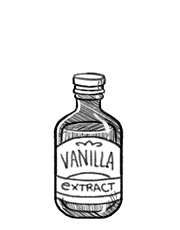

vanilla extract
Vanilla extract is used a cheap alternatives to using fresh beans. It's available in alcoholic or occasionally glycerol solution, both pure and imitation forms of vanilla contain at least 35 percent alcohol.
To make your own, you need vanilla beans, 35 percent alcohol (like vodka) and a jar. Use 6 vanilla beans per 8 ounces of alcohol. Cut your vanilla bean pods in half along their length with scissors or a knife, put the sliced beans in a jar and cover with alcohol. If beans are too tall, cut in half. Put a lid on and shake, then store in a cool dark place (shake every week). Soak beans for at least 2 months, or more.
vanilla
Vanilla is a flavoring derived from orchids of the genus Vanilla, primarily from the Mexican species, flat-leaved vanilla (V. planifolia). It is the second-most expensive spice after saffron because growing the vanilla seed pods is labor-intensive. Despite the expense, vanilla is highly valued for its flavor. Three major species of vanilla currently are grown globally: V. planifolia (being the most common), V. tahitensis and V. pompona. In addition to varieties, there are also different grades of vanilla beans. Grade A beans are longer and more moist, and Grade B beans are less pretty and usually recommended for making extract. Grade B beans are less expensive.
Vanilla is widely used in both commercial and domestic baking, perfume manufacture, and aromatherapy. Natural vanilla gives a brown or yellow color to preparations, depending on the concentration.